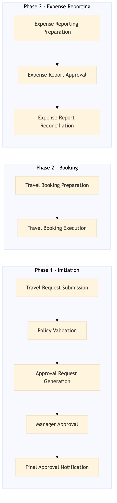

This process document outlines the configuration of the Travel Approval Workflow within the TMC Travel Programme Management domain, ensuring seamless integration and compliance with business travel policies.
| Trigger | Initiation of a new travel request by an employee through the Concur T2 system. |
| Outcome | Successful approval or rejection of the travel request based on predefined business travel policies and automated workflows. |
| Systems | Concur T2 S/4HANA Concur Expense Expedia Open World Partner Central Amadeus NDC Sabre GDS Travelport EVC One Key TravelAds |

Click to enlarge
| Step | Name & Pain Point | Role | System | Input | Output | KPI | Flags |
|---|---|---|---|---|---|---|---|
| 1.1 | Travel Request Submission Inaccurate data entry leading to delays | Employee | Concur T2 | Travel details (destination, dates, budget) | Submitted travel request | 95% submission accuracy | ⚠ Exception |
| 1.2 | Policy Validation Complex policy rules causing delays | Travel Policy Manager | S/4HANA | Submitted travel request | Validation report | 90% policy compliance rate | ◆ Decision |
| 1.3 | Approval Request Generation Misrouting of requests | Travel Policy Manager | Concur T2 | Validation report | Approval request to manager | 85% approval request accuracy | ⚠ Exception |
| 1.4 | Manager Approval Delays in manager response | Manager | Concur T2 | Approval request | Approved or rejected travel request | 80% approval rate | ◆ Decision |
| 1.5 | Final Approval Notification Incorrect notifications | Travel Policy Manager | Concur T2 | Approved or rejected travel request | Notification to employee | 75% notification accuracy | ⚠ Exception |
| 1.6 | Travel Booking Preparation Inaccurate booking data | Travel Coordinator | Concur T2 | Approved travel request | Booking details | 70% booking preparation accuracy | ⚠ Exception |
| 1.7 | Travel Booking Execution Failed bookings due to availability issues | Travel Coordinator | Expedia Open World, Partner Central, Amadeus NDC, Sabre GDS, Travelport, EVC, One Key, TravelAds | Booking details | Confirmed travel booking | 65% successful bookings | ◆ Decision |
| 1.8 | Expense Reporting Preparation Inaccurate expense data entry | Employee | Concur Expense | Travel receipts | Expense report | 60% expense reporting accuracy | ⚠ Exception |
| 1.9 | Expense Report Approval Delays in manager response | Manager | Concur Expense | Expense report | Approved or rejected expense report | 55% approval rate | ◆ Decision |
| 1.10 | Expense Report Reconciliation Mismatched transactions | Finance Team | S/4HANA, Amex Corporate Card | Approved expense report | Reconciled expenses | 50% reconciliation accuracy | ⚠ Exception |